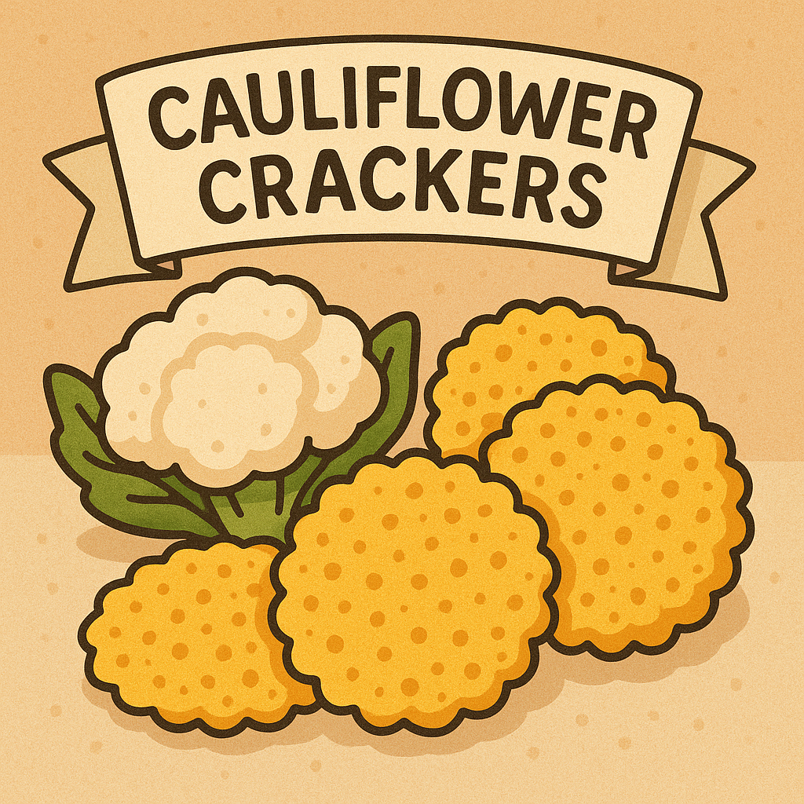

Home
Cauliflower Crackers

Description
Cauliflower crackers are a healthy and low-carb alternative to traditional crackers. They are made with cauliflower, cheese, and spices, baked until crispy.
Ingredients
- 260g cauliflower rice
- 120g shredded cheese (cheddar or mozzarella)
- 1/4 teaspoon garlic powder
- 1/4 teaspoon onion powder
- Salt and pepper to taste
Steps
- Preheat the oven to 200°C.
- In a bowl, combine cauliflower rice, cheese, garlic powder, onion powder, salt, and pepper.
- Mix until well combined.
- Spread the mixture onto a baking tray lined with parchment paper.
- Bake for 15-20 minutes or until golden brown and crispy.
- Let cool before breaking into pieces.